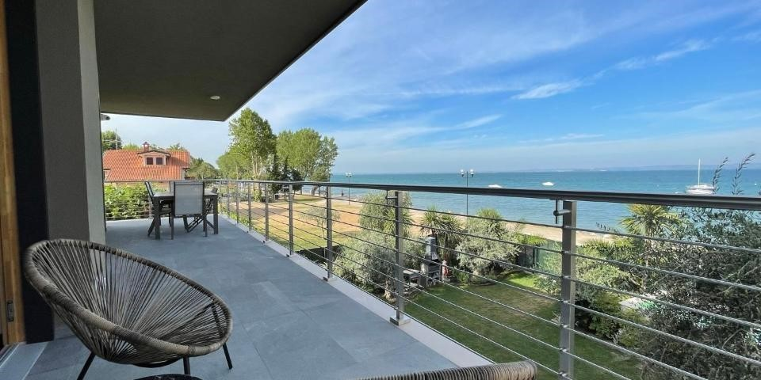
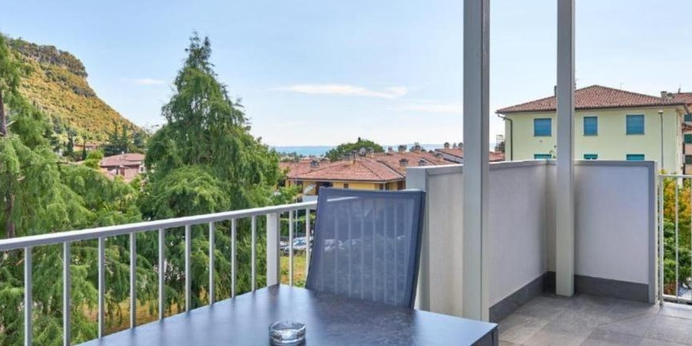
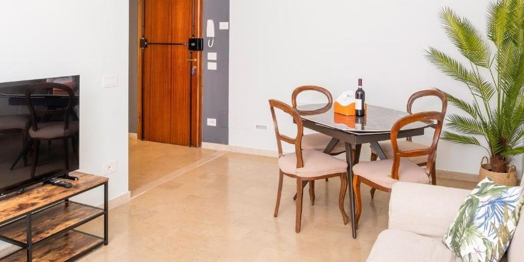
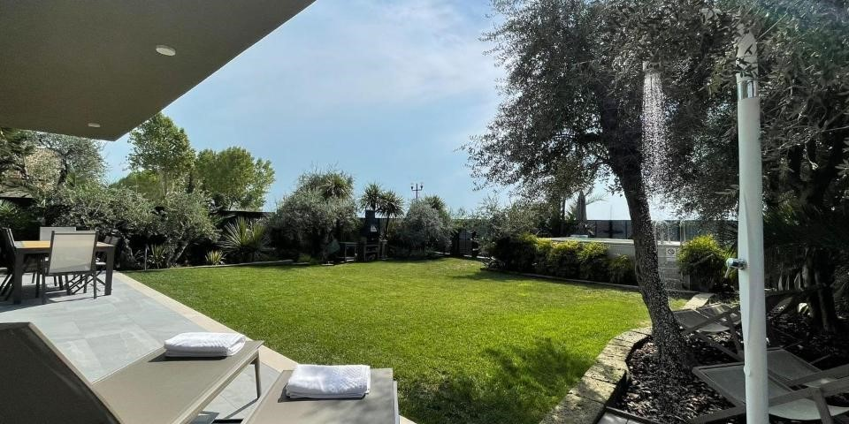

Tel: +36 30 529
0257
Tel: +36 30 529
0257
Pala Apartman
 Herceghalom Búzavirág utca 12.
Herceghalom Búzavirág utca 12.

1. Pala Penthouse apartman

Tágas, szellős apartmanunk nevét a gyönyörű balatoni kilátás ihlette. Külön
hálószoba franciaággyal, a nappaliban egy kihúzható kétszemélyes kanapéval es egy teljes értékű
pótággyal öt fős családok számára is kényelmes. Zuhanyzós fürdőszobával és egy teljesen felszerelt
konyhával szolgálja a vendégek kényelmét. A napsütötte teraszáról páratlan kilátás nyílik a tóra.
Saját fürdőszoba, franciaágy, kanapéágy (kétszemélyes), ékezőasztal 5 székkel, teljesen felszerelt konyha főzőlappal, mikrohullámú sütővel, hűtővel, mosogatógéppel, kávéfőzővel, kenyérpirítóval, légkondicionáló, okos TV, free wifi, kültéri kerti bútor, ingyenes parkoló.
Saját fürdőszoba, franciaágy, kanapéágy (kétszemélyes), ékezőasztal 5 székkel, teljesen felszerelt konyha főzőlappal, mikrohullámú sütővel, hűtővel, mosogatógéppel, kávéfőzővel, kenyérpirítóval, légkondicionáló, okos TV, free wifi, kültéri kerti bútor, ingyenes parkoló.
2. Pala emelet 2 apartman

2. Emeleti Apartmanunk valódi pihenéssel csábít a 6 fős családoknak is
kényelmes, csendes, árnyékos apartmanunk. 3 különálló halószobával, 2 zuhanyzós fürdőszobával és egy
teljesen felszerelt konyhával szolgálja a vendégek itt tartózkodását.
Saját fürdőszoba, franciaágy, kanapéágy (kétszemélyes), étkezőasztal, teljesen felszerelt konyha: indukciós főző, mosogatógép, hűtő, kávéfőző, kenyérpirító, mikrohullámú sütő, légkondicionáló, ingyenes wifi, okos TV.
Saját fürdőszoba, franciaágy, kanapéágy (kétszemélyes), étkezőasztal, teljesen felszerelt konyha: indukciós főző, mosogatógép, hűtő, kávéfőző, kenyérpirító, mikrohullámú sütő, légkondicionáló, ingyenes wifi, okos TV.
3. Pala emelet 1 apartman

Emeleti Apartmanunk ideális választás, ha kedvesével meghitt nyugalomban
szeretne eltölteni pár éjszakát. A hangulatos apartman franciaággyal, zuhanyzós fürdőszobával és egy
teljesen felszerelt konyhával maximális kényelmet nyújt) maximum 4 fő részére.
Saját fürdőszoba, 1 hálószoba franciaággyal, 1 hálószoba két külön ággyal, étkezőasztál, teljesen felszerelt konyha: indukciós főző, mosogatógép, hűtő, kávéfőző, kenyérpirító, mikrohullámú sütő, légkondicionáló, ingyenes wifi, okos TV.
Saját fürdőszoba, 1 hálószoba franciaággyal, 1 hálószoba két külön ággyal, étkezőasztál, teljesen felszerelt konyha: indukciós főző, mosogatógép, hűtő, kávéfőző, kenyérpirító, mikrohullámú sütő, légkondicionáló, ingyenes wifi, okos TV.
4. Pala földszinti apartman

Hangulatos, tágas apartmanunkat jó szívvel ajánljuk nagyobb családoknak vagy
baráti társaságoknak, hisz akár 8 fö is kényelmesen elfér. Két különálló hálószobával, zuhanyzós
fürdőszobával, hatalmas nappalival, étkezővel és teljesen felszerelt konyhával a minőségi időtöltés
remek helyszíne. Kerthelyiségünk kényelmes bútorokkal, kerti sütögetővel várja vendégeinket. Jakuzzi
a kertben. Házi kedvenceket sem kell otthon hagyni, hisz a saját zárható kert számukra is
biztonságos elhelyezést biztosit.
Saját fürdőszoba, franciaágy, kanapéágy (kétszemélyes), ékezőasztal 8 székkel, teljesen felszerelt konyha főzőlappal, mikrohullámú sütővel, hűtővel, mosogatógéppel, kávéfőzővel, kenyérpirítóval, légkondicionáló, okos TV, free wifi, kültéri kerti bútor, ingyenes parkoló.
Saját fürdőszoba, franciaágy, kanapéágy (kétszemélyes), ékezőasztal 8 székkel, teljesen felszerelt konyha főzőlappal, mikrohullámú sütővel, hűtővel, mosogatógéppel, kávéfőzővel, kenyérpirítóval, légkondicionáló, okos TV, free wifi, kültéri kerti bútor, ingyenes parkoló.